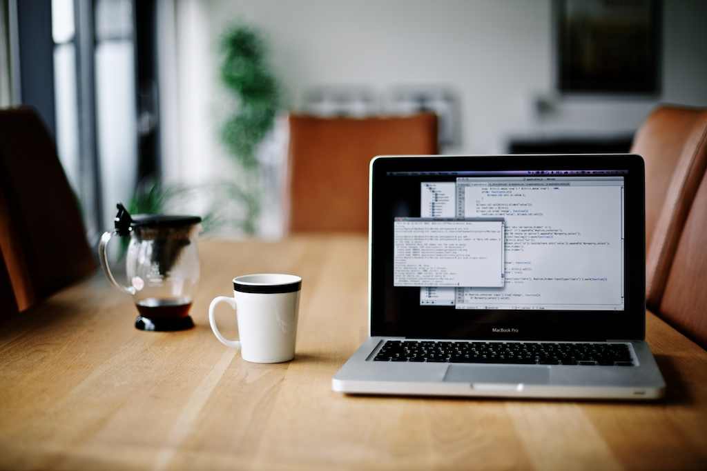

  <div id="index-banner" class="parallax-container">
    <div class="section no-pad-bot">
      <div class="container">
        <br><br>
        <br><br>
        <h1 class="header center">{{ site.title }}</h1>
        <div class="row center">
          <h5 class="header col s12 light">"Learning is not attained by chance, it must be sought for with ardor and diligence"</h5>
        </div>
      </div>
    </div>
    <div class="parallax"></div>
  </div>


  <div class="container">
    <div class="section">

      <!--   Icon Section   -->
      <div class="row">
        <h1 class="page-heading">Posts</h1>

        <ul class="post-list">
          {% for post in site.posts %}
            <li>
              <span class="post-meta">{{ post.date | date: "%b %-d, %Y" }}</span>

              <h2>
                <a class="post-link" href="{{ post.url | prepend: site.baseurl }}">{{ post.title }}</a>
              </h2>
            </li>
          {% endfor %}
        </ul>
        <p class="rss-subscribe">subscribe <a href="{{ "/feed.xml" | prepend: site.baseurl }}">via RSS</a></p>
     </div>

    </div>
  </div>
